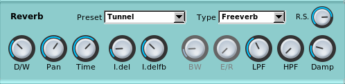
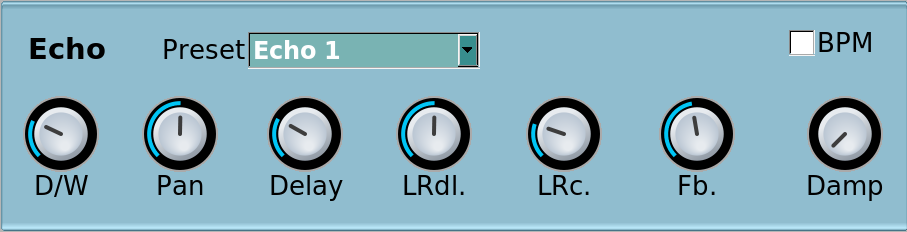
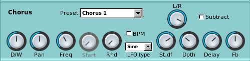
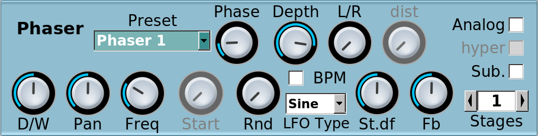
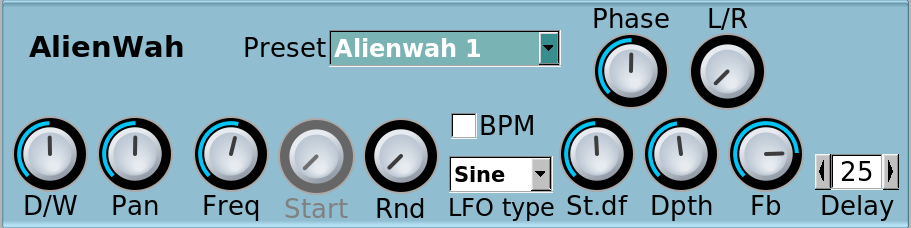
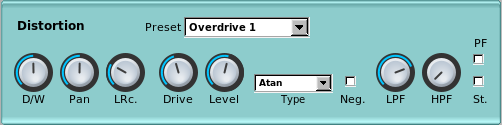
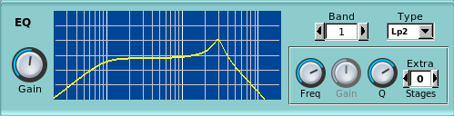
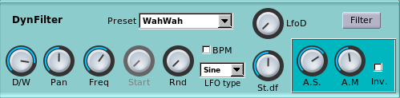
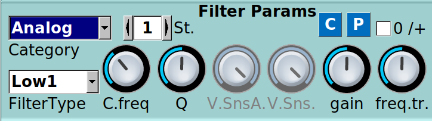

Effects can be applied to single instruments or as master effects.
Most effects have a Preset dropdown which allows to select some 'factory' preset.
For any effect, if you select a preset and then change parameters this dropdown will become blue to remind you the preset has changed.
Note that for some effects, the D/W (Dry/Wet) parameter when editing the effect for a single instrument becomes a Vol (Volume) parameter when applied as Master effects. These are controlled from the Main window. In this section we always refer to D/W.
Reverb

Preset: select a default preset and set paramters accordingly
Type: This selects the reverb type:
- freeverb (default) is the well-knnown freeverb reverb type.
- bandwidth has the same parameters for the comb and allpass filters, but it applies a unison beforethe LPF/HPF. The unison’s bandwidth can be set using BW. this should be explained better (taken from the PDF user guide) random will randomize comb and allpass each time the type or roomsize is being changed ??
R.S.: Room Size (%)
D/W: Dry/Wet balance. If completely to the left only the dry sinal (no reverb) will be heard
Pan: The left/right panning (panorama) for the effect
Time: Reverberation time
I.del: Initial delay (also known as pre-delay)
I.delfb: Initial delay feedback
BW Bandwidth - only available for type bandwidth
E/R: [not yet implemented] Early reflections
LPF: Low Pass Filter. This will cut frequencies above the selected value
HPF: High Pass Filter. This will cut frequencies below the selected value
Damp: Amount of damping of low frequencies
Echo

Preset: select a default preset and set paramters accordingly
D/W: Dry/Wet balance. If completely to the left only the dry sinal (no echo) will be heard
Pan: The left/right panning (panorama) for the effect
LRdl.: Delay between left and right. This can effectively be used to create a 'stereo echo/delay' effect
LRc.: Left/Right crossover. This defines how echos cross left to right. Or the how the delays are 'spread' over the stereo (left/right panorama). To hear a difference there also needs to be a non-zero value in the above LRdl. parameter
Fb.: Feedback value for the echo. The higher the value the more repeats are generated
Damp: Dampening of high frequencies
Chorus

Preset: select a default preset and set paramters accordingly
Subtract Inverts the outpit if selected
D/W: Dry/Wet balance. If completely to the left only the dry sinal (no chorus) will be heard
Pan: The left/right panning (panorama) for the effect
Freq: LFO frequencey
Rnd: Randomness of LFO frequency
LFO Type: Waveform of LFO (Sine / Tri[angle])
St.df: Stereo phase different for the left/righ LFO
Dpth: Depth of the LFO
Delay: Delay of the chorus. Low depth and delay will give a flanger effect
Fb: Feedback
L/R: Left / Right effect routing. Leftmost: left to left, right to right; middle: left+right to centre; rightmost: left to right, right to left
Phaser

Preset: select a default preset and set paramters accordingly
D/W: Dry/Wet balance. If completely to the left only the dry sinal (no phaser) will be heard
Pan: The left/right panning (panorama) for the effect
Freq: LFO frequencey
Rnd: Randomness of LFO frequency
LFO Type: Waveform of LFO (Sine / Tri[angle])
Depth: Effect depth
St.df: Stereo phase different for the left/righ LFO
L/R: Left / Right effect routing. Only available when Analog is not selected. Leftmost: left to left, right to right; middle: left+right to centre; rightmost: left to right, right to left
Fb: Feedback
dist: Phaser distortion. Only available when Analog is selected
Phase: Phase
Analog: FET (Field-effect transistor) emulation (on/off)
hyper: Hyper sine mode (on/off). Only available when Analog is selected
Sub.: Inverts the outpit (on/off)
Stages: Phaser stages (max 12)
AlienWah

Preset: select a default preset and set paramters accordingly
Phase Phase of the AlienWah effect. This sets the vocal sound between an 'Aahh' and an 'Eehh'
D/W: Dry/Wet balance. If completely to the left only the dry sinal (no AlienWah) will be heard
Pan: The left/right panning (panorama) for the effect
Freq: LFO frequencey
Rnd: Randomness of LFO frequency
LFO Type: Waveform of LFO (Sine / Tri[angle])
St.df: Stereo phase difference for the left/righ LFO
Dpth: Depth of the LFO
Fb: Feedback
Delay: Delay of before the feedback. Low delay will give more of a wha wha effect (0 to 100)
L/R: Left / Right effect routing. Leftmost: left to left, right to right; middle: left+right to centre; rightmost: left to right, right to left
Distortion

Preset: select a default preset and set paramters accordingly
Pan: The left/right panning (panorama) for the effect
LRc.: Left/Right mix
Drive: Distortion (drive) level
Level: Volume (amplification) level after distortion
Type: Select the wave for the distortion waveshaping function
Neg.: Negate (invert) the signal if selected
LPF: Low Pass Filter. Blocks frequencies above the selected frequency
HPF: High Pass Filter. Blocks frequencies below the selected frequency
PF: Pre Filter. If selected the LPF and HPF are applied before distortion
St. Stereo. If selected the effect is stereo, otherwise mono
EQ

This effect provides a visual representation of the EQ curve as shown in the screenshot. The horizontal axis represent frequencies and the vertical represents amplitude. The yellow line shows how the signal will be filtered (equaliszed).
Gain: Gain of the equalised signal
B.: Band number. The EQ effect providse up to 8 'bands' each of wich can be an independent filter (they are numbered 0 to 7)
T.: Filter type for the selected band.
Freq: Filter frequency. Depending on the type of filter this can be the cut-off or centre frequency.
Gain: Gain for the filter, if foreseen by the type of filter (e.g. peak, high-shelf, low-shelf)
Q: Q factor for the filter. Depending on the type of filter this can be the 'resonance', 'width', etc.
St.: Number of stages for the filter (0 to 4). Typically, the more the stages the more 'drastic' ('steep') the filtering around the center/cutoff frequency
DynFilter
The DynFilter is actually made of two effect stages, the main effect and the filter control accessible via its own pannel by clicking on the 'Filter' button.
Effect parameters

Preset: select a default preset and set paramters accordingly
D/W: Dry/Wet balance. If completely to the left only the dry sinal (no DynFilter) will be heard
Pan: The left/right panning (panorama) for the effect
Freq: DynFilter LFO Frequency
Rnd: Randomness of the LFO Frequency
LFO Type: Waveform of LFO (Sine / Tri[angle])
St.df: Left/right channel phase shift for the LFO
LfoD: LFO Depth
A.S.: Amplitude Sensing. Defines how much the amplitude influences the effect check
A.M.: Amplitude Measurement, i.e. how the RMS value of the amplitude is measured. The higher the value the slower the filter will react
Inv. Invert (negate) the absolute RMS value effectively lowering the filter frequency
Fitler parameters

These paramters are the same as the Filter Type ones. Here, of course, the